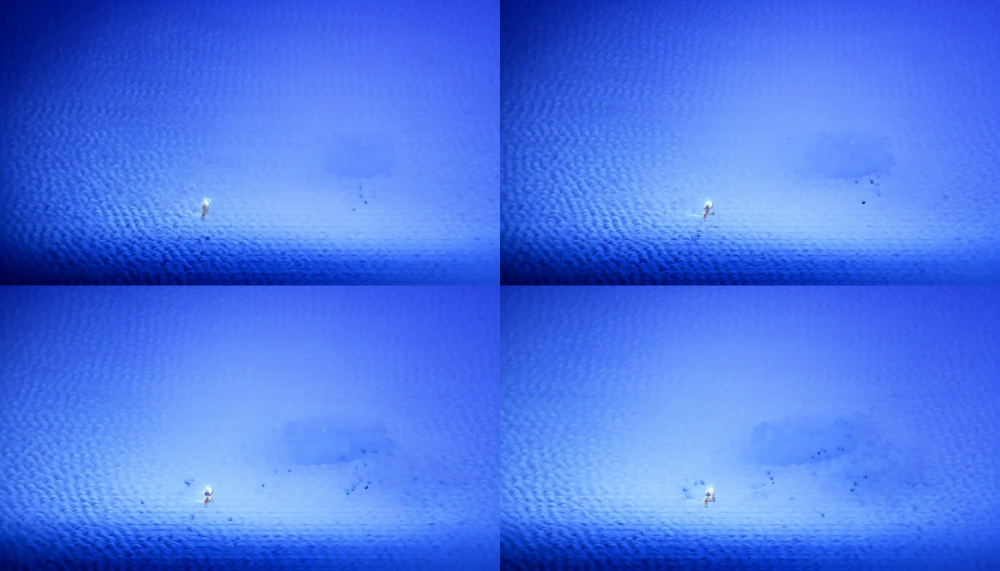
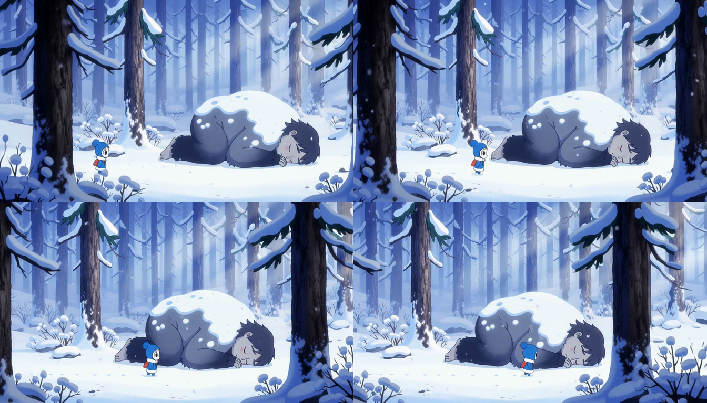

MiniMax-H3 Turbo LoRA
Matched 4-step T2VA validation: real adapter, real TP2 service, real AV output.
The same prompt, seed, resolution, duration, sampling schedule, and server process are used for both clips. The only request-level difference is whether the published LightX2V Turbo LoRA is active.
Result summary
| Variant | HTTP E2E | Stage generation | Relative | MP4 size | Visual result |
|---|---|---|---|---|---|
| No-LoRA control | 7.246 s | 6.684 s | 1.000× | 6.01 MB | Degraded blue texture; prompt subjects are not recovered. |
| Turbo LoRA v1.0 | 7.885 s | 7.345 s | 1.088× latency | 7.49 MB | Coherent forest, character, sleeping giant, motion, and audio. |
Measurement scope: steady requests on 2× NVIDIA B300, TP2, eager execution, BF16, and
TRTLLM_ATTN. These numbers validate functionality and local overhead; they do not reproduce the PR author's 4× H200 USP4 performance claim.
Matched video comparison
1344×768 · 24 FPS · 107 frames · H.264 video · 32 kHz stereo AAC · seed 1101
Four matched points in time
Frames 0, 35, 70, and 106. The Turbo result preserves scene structure and subject identity throughout the clip.


Exact request contract
Prompt
In a snowy blue-purple forest, Ori carefully walks past a sleeping giant; footsteps crunch in the snow while the creature breathes and softly snorts.
Sampling
- Task
- T2VA
- Steps / flow shift
- 4 / 6
- Duration
- 4.4 s requested
- Audio flow shift
- 3.0
- LoRA scale
- 1.0
Implementation evidence
| PR head | 53f54af83e2970dca4d3e02d635bb4c80920b151 |
|---|---|
| Runtime | Python 3.12 · PyTorch 2.13.0 + CUDA 13.0 · vLLM 0.27.0 |
| Topology | 2× NVIDIA B300 · DiT TP2 · text encoder TP2 · VAE patch parallel 2 |
| Adapter contract | rank 128 · alpha 128 · 624 tensors → 312 logical targets |
| Adapter SHA-256 | 1bdabc2e9fce20b1db563b96bcf6e46adcad4c1964f423676436bf266cc7416c |
| Regression checks | 140 tests passed · project pre-commit passed · worktree clean |
| Output validation | Full ffmpeg decode passed · H.264 1344×768/24 FPS · AAC 32 kHz stereo · non-silent audio |
| Determinism | Cold and warm Turbo runs produced the same decoded-video SHA-256. |
Validation conclusion
PR #6476 does more than produce a valid container: the published Turbo v1.0 adapter restores a coherent, usable 4-step result while the matched no-LoRA control collapses. Dynamic deactivation and reactivation were both observed in the live TP2 service.
Host note: the installed FlashAttention wheel lacked a B300/SM103 kernel image, so the successful validation used the platform's supported TRTLLM_ATTN path. FL2VA, regional torch.compile, and the author's H200 latency table are outside this run's scope.